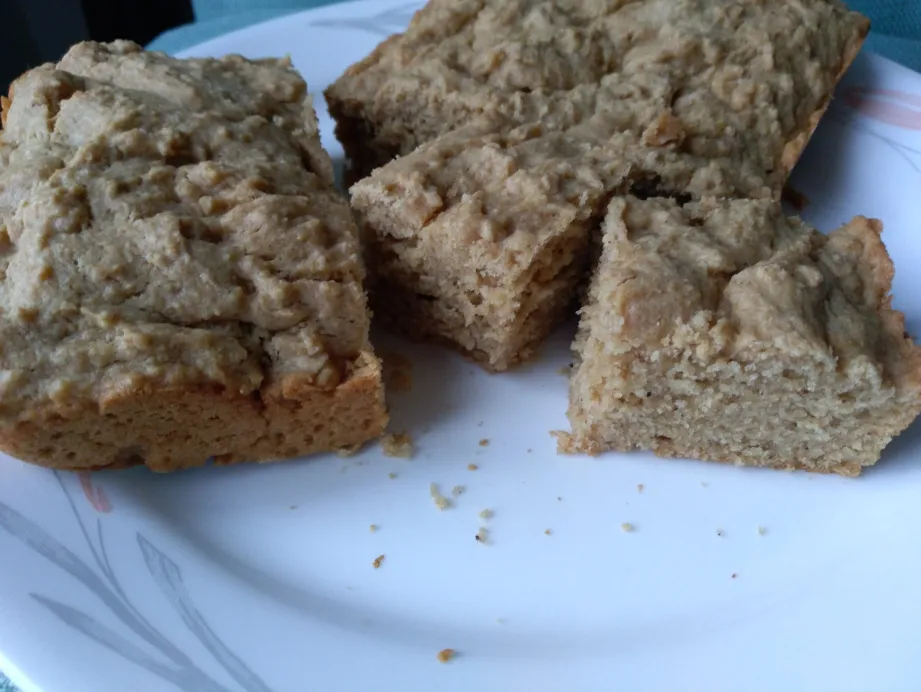

Tea Bread Recipe

Tea Bread
Description
This delicious treat that is perfect for coffee and tea.
Ingredients
- 1.5 cup whole wheat flour
- 1.5 tsp baking powder
- 2 TBSP Sugar or honey or agave or maple syrup
- salt 1/8tsp ( note this is less than 1/4tsp)
- 1/4tsp Nut Meg
- Softened Butter 1/4cup (real butter)
- 2 TBSP Flaxseed
- 0.75 cup (less than 1 cup) Plant milk
- half Tsp Vanilla extract
Steps
- Sift out the flour, sugar, and baking powder in a mixing bowl. This helps to eliminate and prevent lumps that would weigh down the batter.
- To this, add salt and nutmeg then mix it very well with a fork.
- Add refrigerated cold or softened butter and rub it in the mixture using your fingertips. Continue until the mixture resembles fine bread crumbs.
- In a separate bowl, pour in Plant milk, vanilla extract, and flaxseed liquid. Beat the mixture with a fork to get a nice even color.
- Add the beat liquid to the flour mixture little by little while stirring gently with a spoon. Do not mix it completely.
- Put the batter in a greased baking pan and even it out by shaking it gently..
- Bake for 30 minutes at 350D.
- Serve it hot